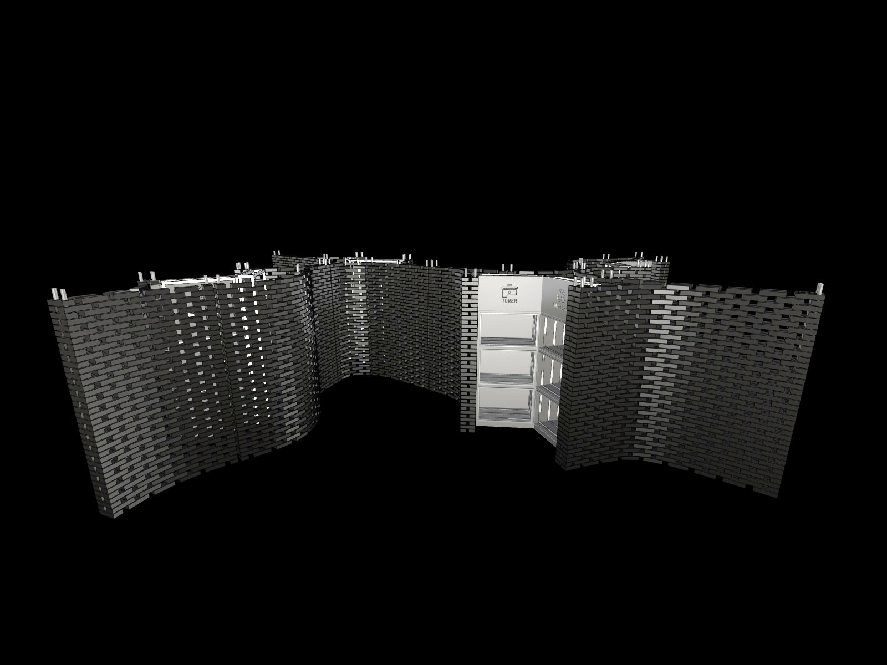
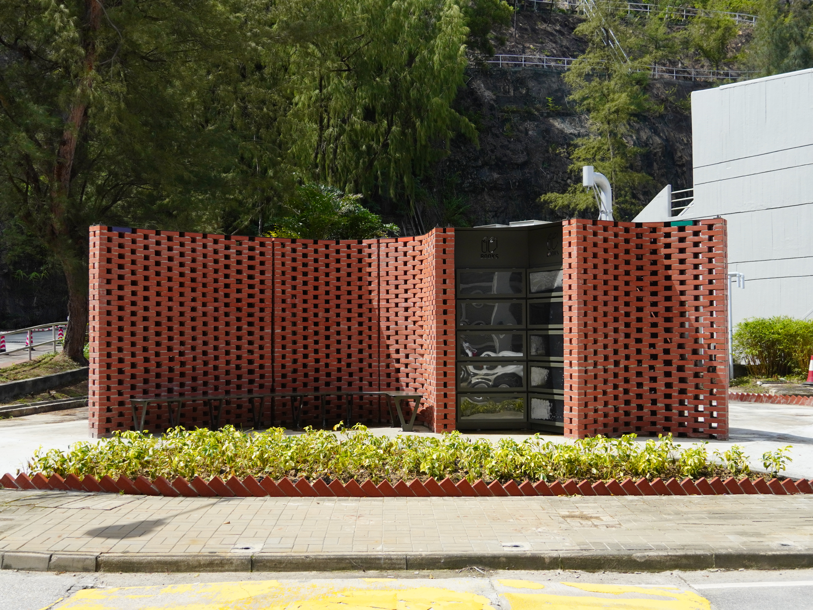
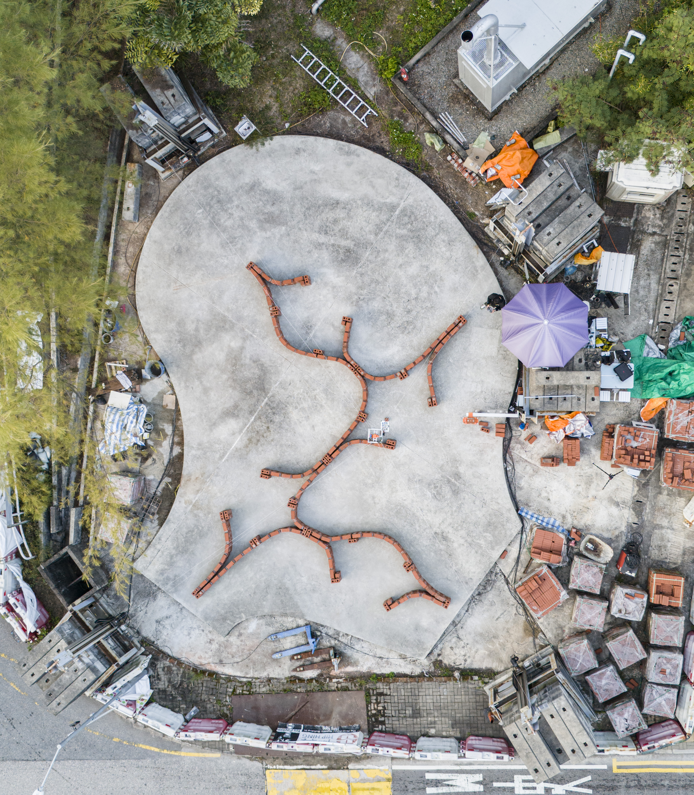

CU-Brick Brick Construction Cable-Driven Parallel Robot




Project Overview
The CU Brick Construction Cable-Driven Parallel Robot (CDPR) is designed for bricklaying tasks. It utilizes a cable-driven parallel mechanism to achieve high precision and flexibility in brick placement. Its real-world performance was experimentally evaluated both qualitatively and quantitatively in the construction of the Yard for Environmental Sustainability (YES) project. A permeit brick structure with a construction area of 13 m. × 9 m and a total height of 2.5 m, comprising 40 layers and more than 5,800 bricks.
The system integrates real-time calibration and localization
using fiducial markers and 3D scanning, ensuring high accuracy
in brick placement. It features an elevation system for
workspace adjustment, enabling the construction of taller
structures while avoiding cable interference.
TVB News: 中大研發用機械人建曲線牆 團隊稱技術上可使創意建築成真
Now News: 中大以砌磚機械人助建校園角落 冀日後應用於政府工程
有線新聞: 中大研發砌磚機械人 以線纜驅動、自動修正路線 助建校內「再生園」
港台新聞: 中大研發自動化線控砌磚機械人投入運作
Responsibilities
- Designed and implemented a cable-driven parallel robot (CDPR) for automated bricklaying in a real-world construction projects
- Demonstrated the ability to autonomously construct complex brick structures with over 5,800 bricks, spanning 40 layers, and reaching a height of 2.5m
- Developed a system that integrates fiducial markers and high-resolution 3D spatial data to achieve accurate calibration and localisation in construction tasks
- Designed layouts and manufactured the Electric and Control boxes for the robot
- Published a academic paper as first author for the project in robotics conference